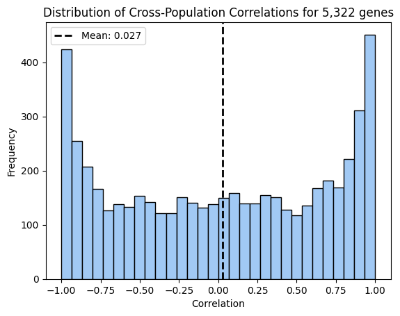
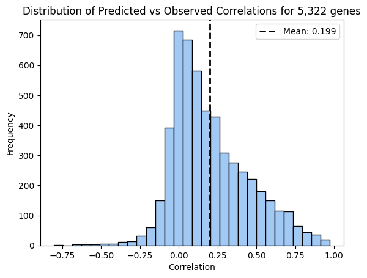

import pandas as pd
import numpy as np
import matplotlib.pyplot as plt
import seaborn as sns
colors = sns.color_palette("pastel")
predictions_dir = '/eagle/AIHPC4Edu/sabrina/Br_prediction_from_founders'
probabilities_dir = "/eagle/AIHPC4Edu/sabrina/Br_genotype_probabilities"
reference_dir = "/eagle/AIHPC4Edu/sabrina/Br_predictions/HS_founder_epigenomes/human"
output_dir = "/eagle/AIHPC4Edu/sabrina/Br_prediction_from_founders"EpigenomeXcan consists of two steps: 1. Fast Enformer prediction for gene expression and 2. Calculate Gene-Trait association under a linear mixed effects model.
We predicted gene expression in whole brain tissues using both Fast Enformer and PrediXcan methods.
Concatenate Fast Enformer Predictions
Fast Enformer predictions were computed in this blog post
The output files from Fast Enformer are split by chromosome, so the code below combines them into a single file.
Code
predictions_by_chrom = []
for N in range(1,21):
df = pd.read_csv(f'{predictions_dir}/chr{N}_CAGE_brain__predict.txt', index_col=0)
predictions_by_chrom.append(df)
CAGE_predictions = pd.concat(predictions_by_chrom, axis=1)
CAGE_predictions.to_csv(f'{predictions_dir}/Br_all_genes_by_tissue/Br_CAGE_brain__predict.txt')Write Phenotype File
There are 324 Br rats with genotype and phenotype (body length, BMI) data for the RatXcan run. We will filter the phenotypes to those sample, then write it as a headerless fam file with columns FID, IID, bodylen, bmi.
all_pheno = pd.read_csv("/home/s1mi/enformer_rat_data/phenotypes/ALLTRAITSALLNORMALIZES_19jul24.csv",
usecols = ['rfid', 'dissection:regressedlr_length_w_tail_cm', 'dissection:regressedlr_bmi_w_tail'],
index_col = 'rfid')
all_pheno.columns = ['bodylen', 'bmi']
pheno = all_pheno[all_pheno['bodylen'].notna()]
pheno_samples = list(pheno.index)
pred_expr = pd.read_csv(f'{output_dir}/Br_all_genes_by_tissue/Br_CAGE_brain__predict.txt', index_col=0)
samples = pred_expr.index.intersection(pheno_samples)
pheno = pheno.loc[samples]
pheno.insert(loc=0, column="FID", value=pheno.index)
pheno.insert(loc=1, column="IID", value=pheno.index)
pheno.to_csv("Br_pheno.fam", sep="\t", index=False, header=False)
with open("samples.txt", "w") as f:
f.write("\n".join(samples))/tmp/ipykernel_2829099/4176093476.py:1: DtypeWarning: Columns (0) have mixed types. Specify dtype option on import or set low_memory=False.
all_pheno = pd.read_csv("/home/s1mi/enformer_rat_data/phenotypes/ALLTRAITSALLNORMALIZES_19jul24.csv",Write Genotype Files
First, filter Brain VCF to the 324 samples with phenotype data.
bcftools view -S 2024-08-08-Br-epigenomeXcan-vs-ratXcan-validation/samples.txt -Oz -o ~/PrediXcan/data/Br_bodylen_bmi.vcf.gz ~/enformer_rat_data/genotypes/Brain.rn7.vcf.gz
CAGE_predictions = pd.read_csv(f'{predictions_dir}/Br_all_genes_by_tissue/Br_CAGE_brain__predict.txt', index_col=0)Run PrediXcan
I ran locally, then copied to polaris.
cd /Users/sabrinami/ratxcan-tutorial
conda activate imlabtools
python MetaXcan/software/Predict.py \
--model_db_path models/AC-filtered.db \
--model_db_snp_key rsid \
--vcf_genotypes data/genotype/Brain.rn7.vcf.gz \
--vcf_mode genotyped \
--liftover data/liftover/rn7ToRn6.over.chain.gz \
--on_the_fly_mapping METADATA "{}_{}_{}_{}" \
--prediction_output output/AC-filtered-Br__predict.txt \
--prediction_summary_output output/AC-filtered-Br__summary.txt \
--throwValidating Fast Enformer Predicted Expression
Fast Enformer vs PrediXcan
We have two dataframes with individuals as rows and genes as columns. We compute correlation across individuals (fixing a gene) as well as correlation across genes (fixing an individual) and plot their distributions
AC_predictions = pd.read_csv('/home/s1mi/PrediXcan/Br/AC-filtered-Br__predict.txt', sep = '\t', index_col = 'IID').drop('FID', axis=1)
gene_list = (AC_predictions.columns).intersection(CAGE_predictions.columns)
individuals = AC_predictions.index
filtered_AC_predictions = AC_predictions.reindex(columns = gene_list)
filtered_CAGE_predictions = CAGE_predictions.reindex(index = individuals, columns = gene_list)Correlations across Individuals
How well does Fast Enformer approximate PrediXcan when predicting variation across individuals?
correlations_across_individuals = filtered_AC_predictions.corrwith(filtered_CAGE_predictions, axis=0)
#plt.figure(figsize=(10, 6))
plt.hist(correlations_across_individuals, bins=30, edgecolor='black', color=colors[0])
plt.title('Distribution of Cross-Population Correlations for 5,322 genes')
plt.xlabel('Correlation')
plt.ylabel('Frequency')
mean = np.mean(correlations_across_individuals)
plt.axvline(mean, color='black', linestyle='dashed', linewidth=2, label=f'Mean: {mean:.3f}')
plt.legend()
plt.show()
Correlations across Genes
This is less relevant, since our focus is to identify significant gene-trait associations by phenotype variation across individuals is regressed on gene expression variation across indviduals. However, we still check that Fast Enformer can predict variation across the genome for each individual.
Fast Enformer vs Observed
Correlation across individuals
gene_expr_bed = "/home/s1mi/enformer_rat_data/expression_data/Brain.rn7.expr.tpm.bed"
obs_gene_expr = pd.read_csv(gene_expr_bed, sep="\t", header=0, index_col='gene_id').transpose()
filtered_observed = obs_gene_expr.reindex(index = individuals, columns = gene_list)/tmp/ipykernel_3966632/147634754.py:2: DtypeWarning: Columns (0) have mixed types. Specify dtype option on import or set low_memory=False.
obs_gene_expr = pd.read_csv(gene_expr_bed, sep="\t", header=0, index_col='gene_id').transpose()correlations_across_individuals = filtered_AC_predictions.corrwith(filtered_observed, axis=0)
#plt.figure(figsize=(10, 6))
plt.hist(correlations_across_individuals, bins=30, edgecolor='black', color=colors[0])
plt.title('Distribution of Predicted vs Observed Correlations for 5,322 genes')
plt.xlabel('Correlation')
plt.ylabel('Frequency')
mean = np.mean(correlations_across_individuals)
plt.axvline(mean, color='black', linestyle='dashed', linewidth=2, label=f'Mean: {mean:.3f}')
plt.legend()
plt.show()
Validating Fast Enformer Association
Fast Enformer vs PrediXcan
all_pheno = pd.read_csv("/home/s1mi/enformer_rat_data/phenotypes/ALLTRAITSALLNORMALIZES_19jul24.csv",
usecols = ['rfid', 'dissection:regressedlr_length_w_tail_cm', 'dissection:regressedlr_bmi_w_tail'],
index_col = 'rfid')
all_pheno.columns = ['bodylen', 'bmi']
#filtered_pheno = all_pheno.loc[individuals]/tmp/ipykernel_3966632/3319952844.py:1: DtypeWarning: Columns (0) have mixed types. Specify dtype option on import or set low_memory=False.
all_pheno = pd.read_csv("/home/s1mi/enformer_rat_data/phenotypes/ALLTRAITSALLNORMALIZES_19jul24.csv",filtered_samples = (all_pheno[all_pheno['bodylen'].notna()].index).intersection(individuals)
pheno_df = all_pheno.loc[filtered_samples]['bodylen']
CAGE_df = filtered_CAGE_predictions.loc[filtered_samples]